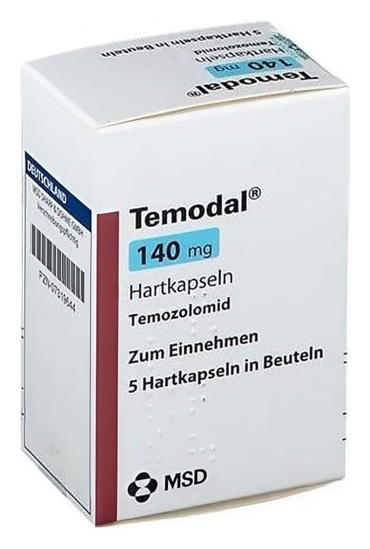

Temodal 140 mg Sert Kapsül, 5 Adet

Ne için kullanılır
KT · Bölüm 1TEMODAL, 5 adet tek dozluk paketlerde ambalajlanmıştır. Kapsüllerin gövde kısmı beyaz, kapak kısmı mavidir.
TEMODAL, bazı özel beyin tümörlerinin tedavisinde kullanılır:
-Yeni tanı almış glioblastoma multiforme'li erişkinlerde Temodal, önce radyoterapi ile birlikte (tedavinin eş zamanlı aşamasında) ve sonra tek başına (tedavinin monoterapi aşamasında) kullanılır. -Glioblastoma multiforme veya anaplastik astrositom gibi malign gliomu olan 3 yaş ve üstü çocuklarda ve yetişkin hastalarda, standart tedavi sonrası hastalık geri dönerse veya kötüleşirse TEMODAL kullanılır.
TEMODAL, bir cilt kanseri türü olan metastatik melanom hastalarının tedavisinde kullanılır.